B / C 版圖片變體 × 3 選 1
六個關鍵圖位，每個提供 現行版 + 兩個不同創意方向。挑好後告訴我（例如「b-hero 用 v3、c-connect 用 v2」），我會直接替換頁面並重新部署。
主視覺 Hero — b-hero
頁面第一印象，也是 og:image 社群分享圖。
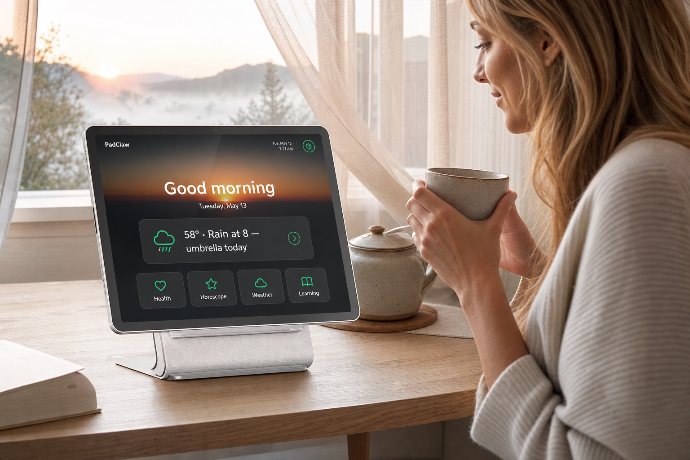
窗邊晨光＋人物側臉＋日出漸層 UI。溫度與產品清晰度平衡。
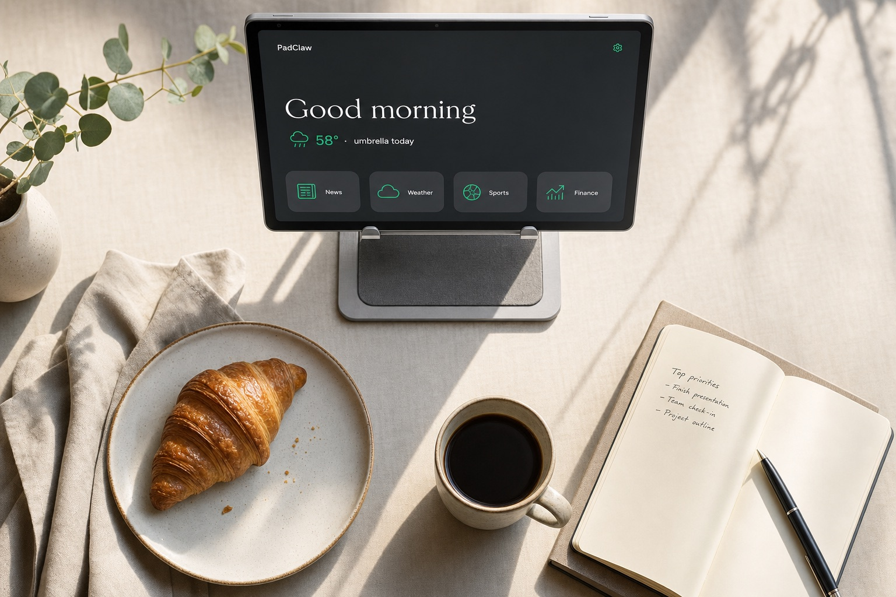
雜誌風 flat-lay：可頌、咖啡、筆記本、平板。構圖最精緻。注意：底部 chips 生成為 News/Sports/Finance，選用時建議重生或後製改為四頻道。
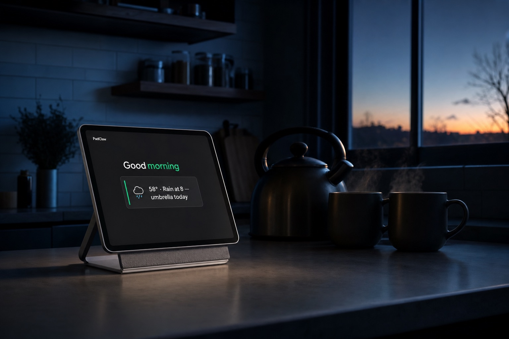
深藍晨暮中平板是唯一的平靜光源。最有電影感、最「Calm」的詮釋。
混亂 vs 平靜 — b-contrast
核心論述圖：一張圖講完產品哲學。
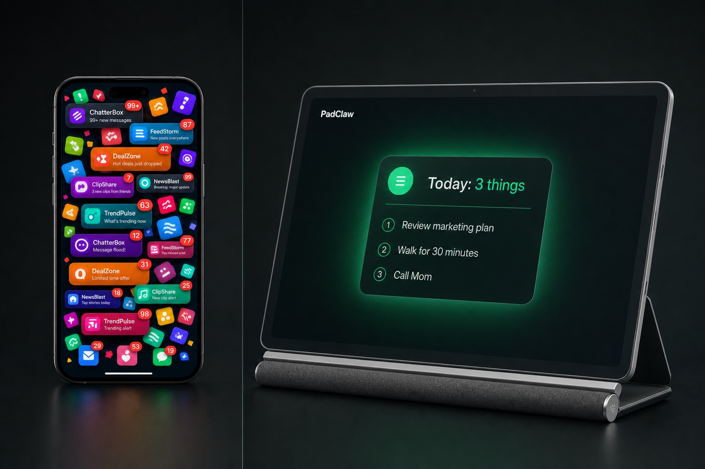
左右分割：通知爆炸的手機 vs「Today: 3 things」。最直白的對比論述。
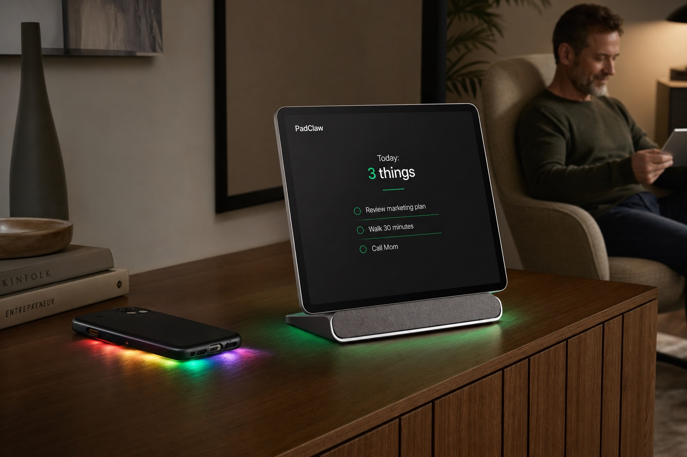
手機面朝下漏出混亂彩光、平板端正發著綠光。同一空間的對比，更含蓄高級。
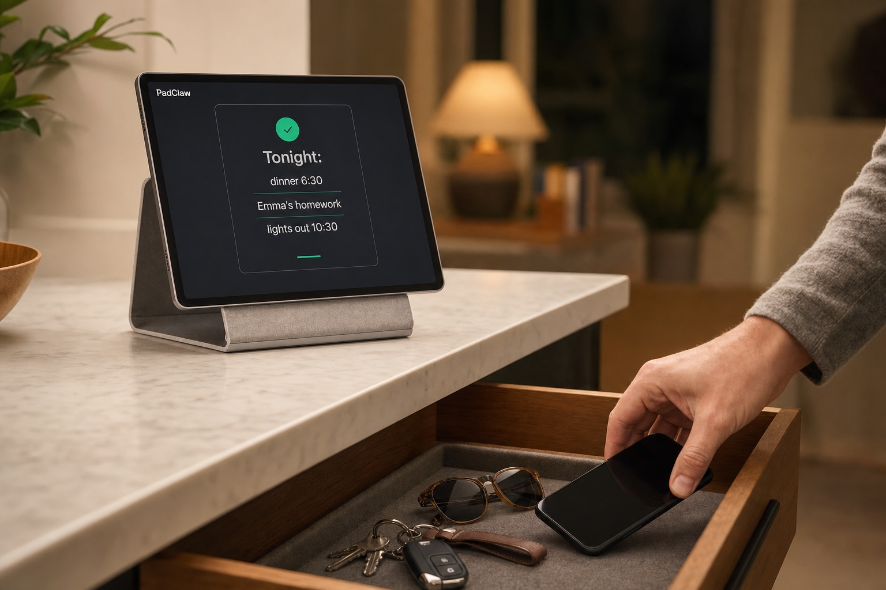
敘事型：手把手機放進抽屜的動作，背景平板安靜待命。有故事、有儀式感。
日常儀式 — b-ritual
「一天」段落配圖：人在生活裡，螢幕在背景。
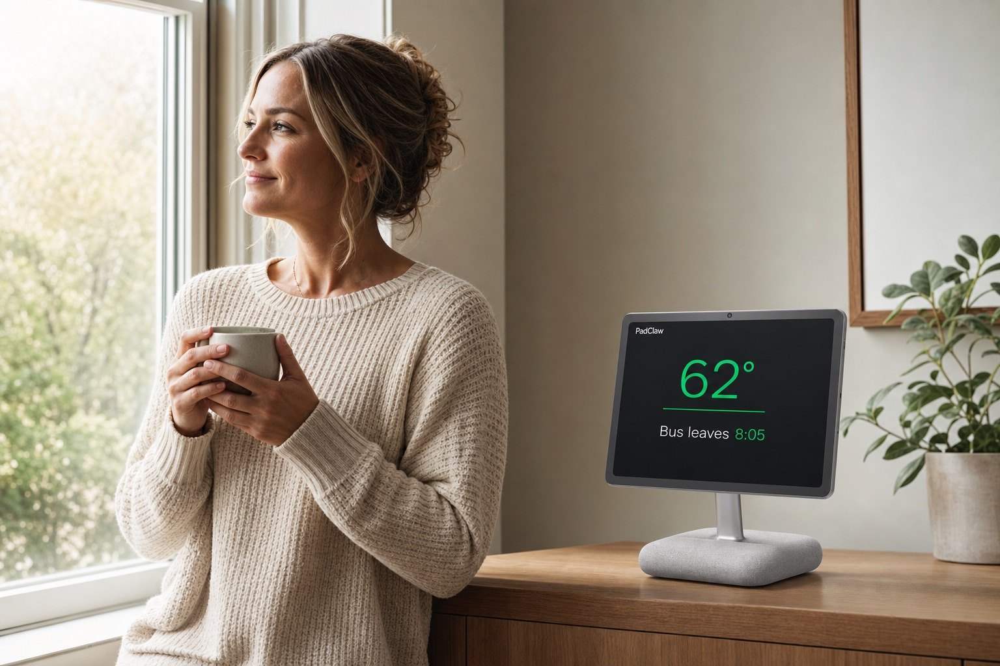
女子捧茶望窗、平板顯示 62° 與公車時間。「螢幕等人、不是人等螢幕」。
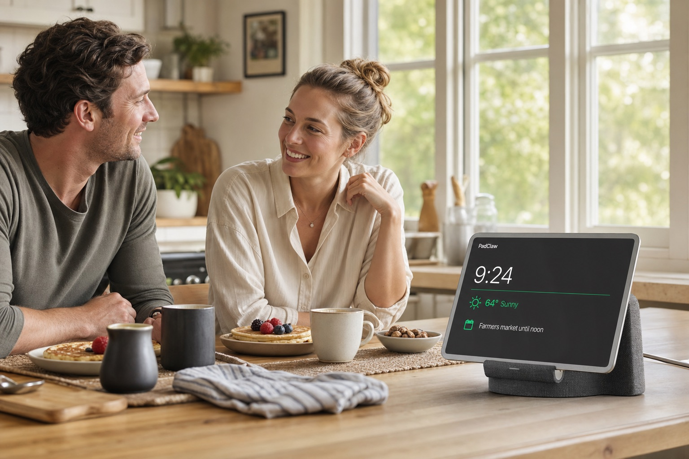
夫妻專注聊天吃鬆餅，平板在桌尾當「家具」。人是主角，適合強調關係。
檯燈下讀實體書，平板夜間模式微光顯示明日三件事。呼應「一天的結束」段落。
主視覺 Hero — c-hero
整個版本 C 的情感核心：「媽媽完成簽到」那一刻。

女兒看手機通知＋桌上媽媽的相框＋自家 PadClaw 同步顯示。資訊最完整。
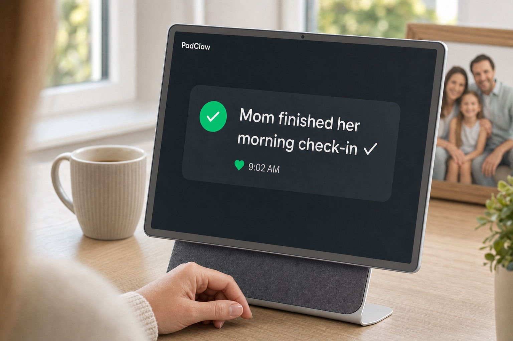
手持手機大特寫，通知卡就是主角。縮圖可讀性最強，最適合當廣告素材。
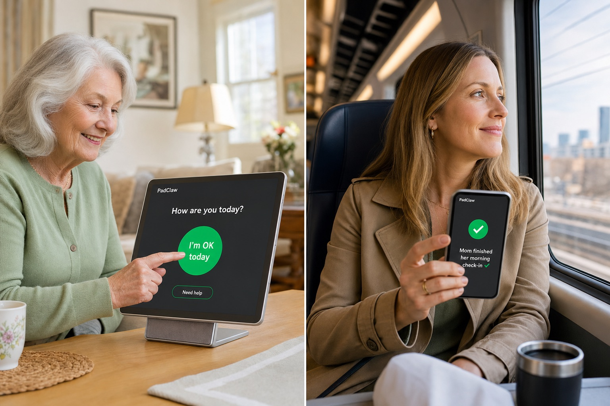
左：媽媽按下 I'm OK；右：通勤中的女兒看到通知微笑。「同一秒，相隔六十哩」。
兩個家的連結 — c-connect
「三明治世代」段落配圖：距離與牽掛的視覺化。

室內雙景：奶奶客廳 ↔ 兒子的城市公寓，綠色光線橫跨串聯。
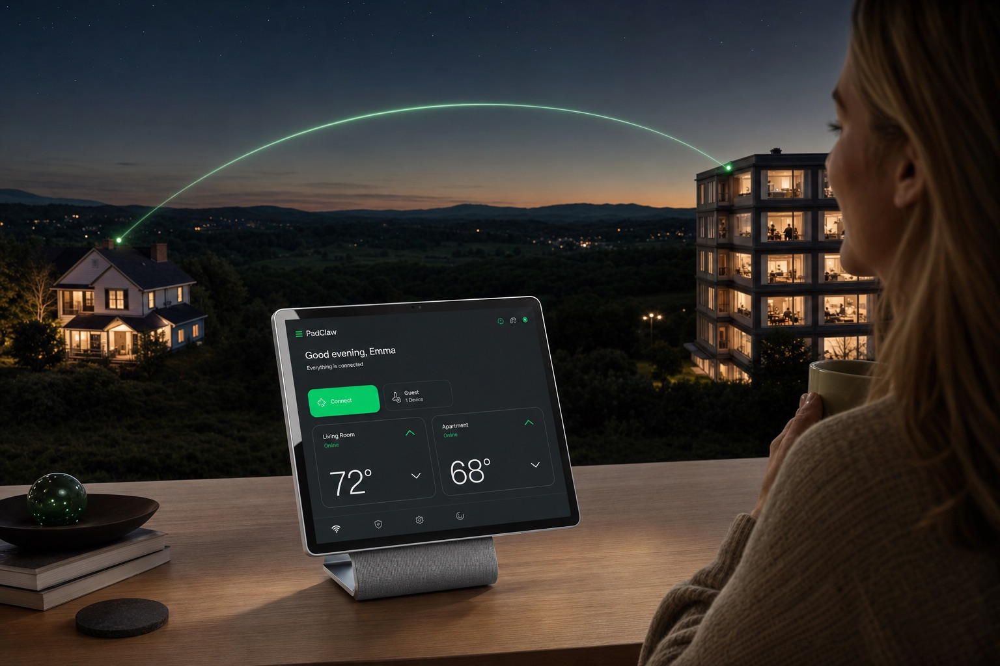
女子在窗前，窗外兩棟房子被綠光弧線相連。詩意格局最大；注意：平板 UI 生成為溫控介面，選用時需重生 UI 或後製替換。
奶奶對著平板上的孫子們揮手。最直接的溫情，適合偏好具象畫面的受眾。
每日簽到 — c-checkin
產品核心互動的特寫：一個按鈕的尊嚴設計。

長輩手指按下「I'm OK today」大按鈕的特寫。UI 與動作最清楚。
奶奶捧茶滿足微笑，螢幕顯示「All done, Barbara! Emily can see you're OK ✓」。賣的是完成後的安心。
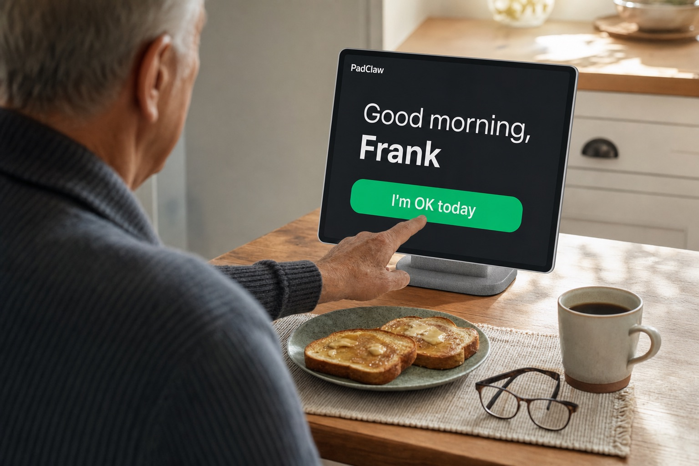
過肩視角，Frank 在吐司咖啡旁按下按鈕。男性長輩版本，更不擺拍。